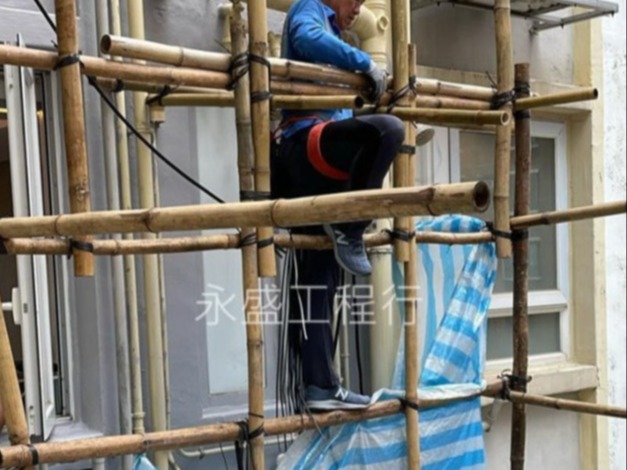

7大步驟徹底解決外牆滲漏，使用專業儀器檢測，確保防水層壽命長久。
每一個細節都嚴格把關，杜絕反覆漏水
根據環境選擇棚架或工程吊車，確保施工安全及覆蓋所有區域。
清除外牆髒物、舊漆，整平凹凸位置，讓防水材料完全貼合。
仔細檢查每一處裂縫，使用專用物料填補，結構回復穩固。
避免雨天、大風或濕度過高，確保塗層乾燥及附著力。
先上底漆，再塗透氣中層，最後施作透明面漆，層層保護。
完成後拆除棚架或吊車，徹底清理施工環境，還原整潔。
全面檢查塗層，如有需要立即補強，確保防水層零死角。
完工後以測濕儀確認外牆含水率，提供數據報告及保修。

永盛工程行
WING SHING ENGINEERING CO.
UNIT1, 7/F, BLK D, MAI WAH IND BLDG, KWAI CHUNG
外牆是建築物抵禦外界風雨的屏障。然而，在香港多颱風、多雨的環境下，外牆漏水與窗台滲漏成為許多業主的夢魘。滲漏不僅會損壞室內裝修，更可能引發鋼筋生鏽及混凝土剝落等結構問題。作為專業的香港防水公司，永盛工程行將為您深度解析外牆防漏的關鍵技術與施工要點。
香港建築物的外牆長期暴露在極端天氣下。熱脹冷縮會導致磁磚、石屎批盪層產生微細裂縫（髮絲裂縫）。水份一旦滲入，會隨著風壓被壓入室內。常見的誘因包括：
窗台漏水是香港家庭最普遍的煩惱。通常發生在窗框與牆身的接合位：
專業的防水師傅會採取「剷、清、補」的策略，徹底清除舊膠並注入高效能防水密封材料，確保窗台防水一勞永逸。
永盛工程行在執行外牆防水工程時，嚴格遵守以下流程：
了解防水工程價錢是合理的，但「防漏」更應看重長遠效益。一次廉價且不專業的維修，往往不到一年就再次滲漏，導致室內牆身、木地板及家具反覆受損。選擇具備防水保養承諾的香港防水公司，才是對物業價值的真正保護。
對於高層大廈，盲目搭棚維修的成本極高。永盛工程行利用紅外線漏水檢測技術，能在地面或室內初步定位滲漏區域，精準規劃維修範圍，為業主節省大量的搭棚或吊船費用。這也是為什麼我們在防水公司推薦中名列前茅的原因。
不要忽視外牆的每一條微細裂縫。選擇值得信賴的專業團隊，從源頭解決外牆漏水問題。立即聯絡永盛工程行，獲取您的免費上門勘察與漏水維修報價！